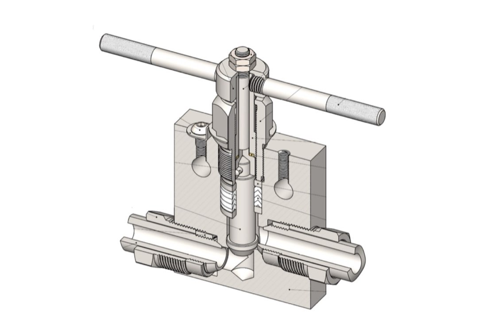
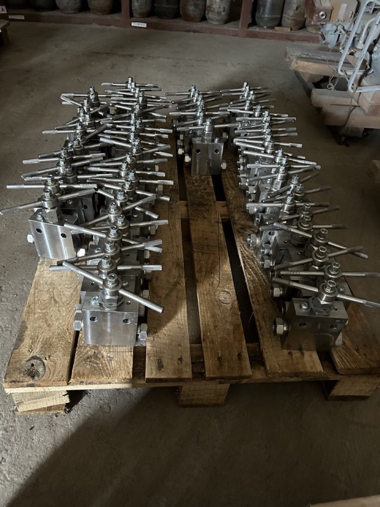

Vysokotlakové prístrojové armatúry
Uzatvárací ventil VZ LF16/20000
Ihlový uzatvárací ventil pre meracie prístroje a snímače tlakovej diferencie. Kompletná výrobná dokumentácia, katalógový list a sériová výroba.
| Max. pracovný tlak | 1 378 bar / 20 000 psi |
| Rozsah teplôt | −54…+232 °C |
| Tesnosť sedla | API 598, nulová netesnosť |
| Teleso / vreteno | AISI 316 / 17-4PH |
| Pripojenie | Vnútorný závit LF16 |
| Životnosť | 3 000 cyklov · 10 rokov |
Rozsah: koncepcia, 3D model, výrobné a zostavné výkresy, katalógový list (EN), podpora výroby.